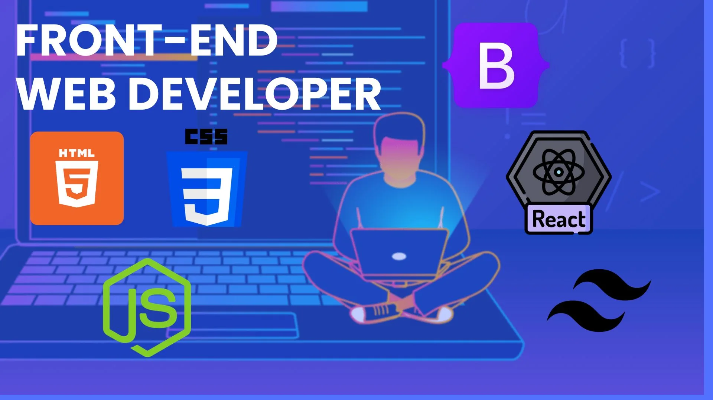
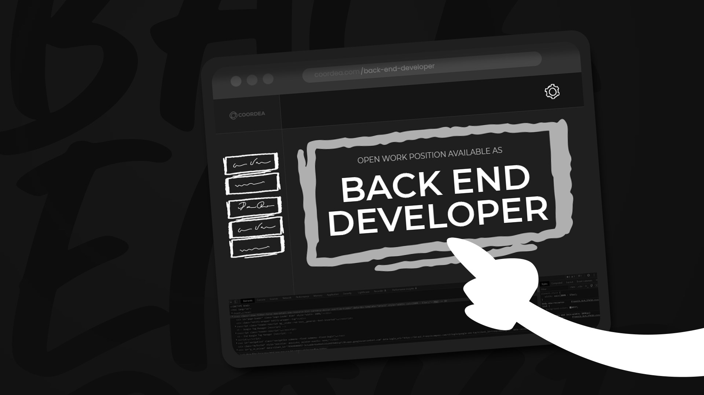

Front-end developer

Who is he ?
The front end developer programs the visible part, the user interface of an app or a website, unlike the back-end developer who works in the shadows.
What does he do ?
He creates web pages following the models of a graphic designer or web designer. He must ensure that the site is responsive, that is to say capable of adapting to all types of media in order to offer a qualitative and uniform experience on all web browsers and phones on the market which have different resolutions and screen sizes. The main objective is to make, or maintain, the site functional, intuitive and fast while respecting W3C standards. Quality code and rigorous pre-production testing serve this purpose.
Who works with him ?
The main collaborator of the front-end developer is the back-end developer. It is together that they will be able to develop almost the entire site or web solution. At the same time, the front end developer may be in contact with UX and UI Designer, web designer or Project Manager.
Who is he responsible for?
Using markup languages such as HTML to create user-friendly web pages. Website maintenance and improvement. Application optimization for maximum responsiveness.
Back-end developer

Who is he ?
The back-end developer programs the hidden part of a web solution, the server side, administrator of an app or a website, unlike the front-end developer who takes care of the visible part.
What does he do ?
Back-end developer can have a more or less broad role. He can be an executor (with a "simple" role of coder), as well as a decision-maker in technical choices. Back end development can therefore encompass the establishment, configuration and maintenance of several essential components of a web project whether it is the server, the database or the website in its entirety.
Who works with him ?
The back-end developer collaborates not only with other people in the same position, but obviously with one or more front-end (or full-stack) developers. It is with the latter that a large part of the development is carried out. The back-end developer also works with other professionals such as the web designer, the project manager or the system administrator.
Who is he responsible for?
He analyzes the needs based on the specifications provided. He can work for his employer or for an external client. It is from these specifications that he will set up the server, configure it and create the functional architecture of the site.
Full-stack Developer

Who is he?
The full-stack developer is a versatile professional proficient in both front-end and back-end development. This role demands a comprehensive skill set, allowing the developer to address various aspects of a web application's architecture.
What does he do?
As a full-stack developer, he undertakes the complete development lifecycle of a web application. On the front end, he crafts interactive and responsive user interfaces using HTML, CSS, and JavaScript. Simultaneously, on the back end, he constructs server-side logic, manages databases, and ensures seamless integration between the front and back end.
Technical Skills:
The full-stack developer excels in front-end technologies such as HTML, CSS, and JavaScript, along with frameworks like React, Angular, or Vue.js. On the back end, he is adept in languages like Node.js, Python, Ruby on Rails, Java, or PHP. Additionally, he possesses expertise in database management (e.g., MySQL, MongoDB, PostgreSQL), version control (Git), API design, integration, and web security best practices.
Who works with him?
Collaboration is a key aspect of the full-stack developer's role. He closely works with front-end and back-end developers, ensuring effective implementation of design elements from UX/UI designers. Project managers rely on his expertise to meet timelines and project requirements successfully.
What is he responsible for?
The full-stack developer's responsibilities encompass the entire development process. This includes understanding project requirements, designing user interactions, developing server-side logic, ensuring high performance and responsiveness, managing database systems, and actively contributing to troubleshooting, debugging, and optimizing web applications for an optimal user experience.